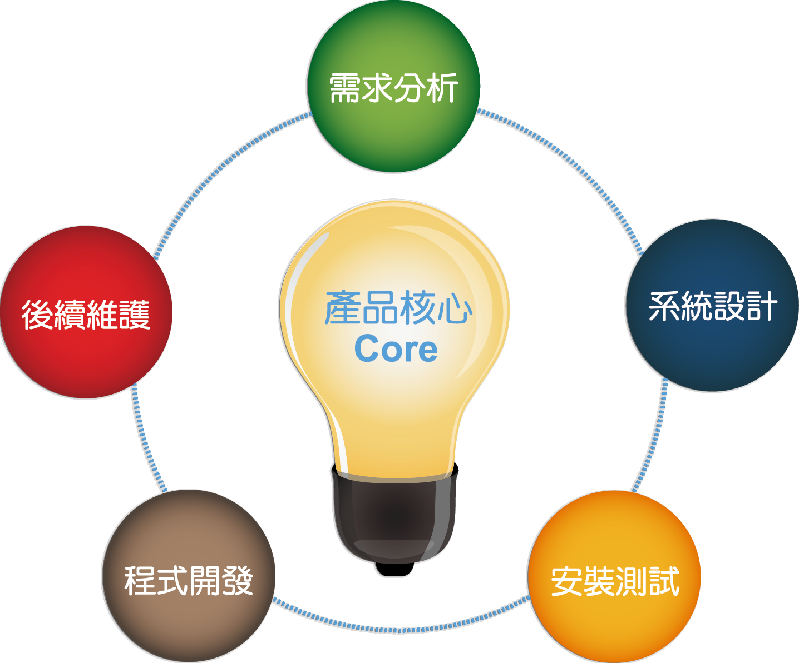
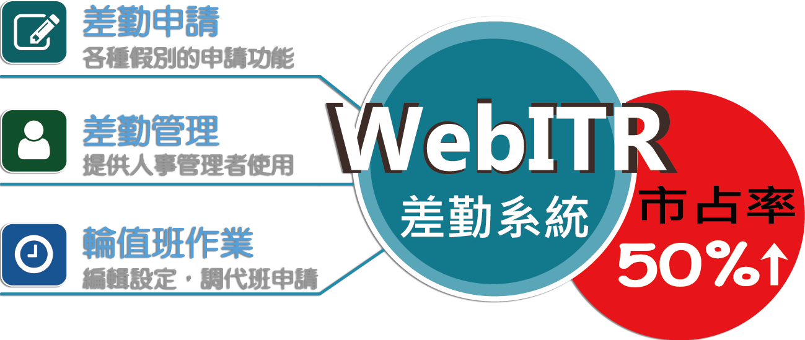

客服網站首頁 > 產品核心
產品核心
我們團隊期許自己可以嚴肅的定義產品，並非追求一次性完美的產品開發，因此當接到客戶客製化需求時並不會完全接受對方意見，而是站在產品設計者的角度給予功能及規格建議。我們在意的是產品的生命週期以及產品的共通性。從需求分析到系統設計、程式開發、安裝測試到系統維護，在維護的過程又會得到回饋，繼續做第二次的需求分析，經過幾次的良性循環，產品就會越趨近穩定、成熟。
產品項目
WebITR差勤系統
● 產品目標
這是行政院人事行政總處所開發的人事業務e化系統，本公司負責這套系統的建置、導入及維護。若機關有客製化需求，只要具有共通性的規格，我們就會把此規格增加在系統裡，提供所有客戶使用，而不需另外收費。此系統大大提昇人事管理效率、節省人力成本及推動無紙化作業環境，並整合資源、降低系統重覆開發成本。本系統是根據公務人員請假法及勞基法開發而成，因此WebITR是符合最新人事法規的差勤系統該，在機關的市占率也達50%以上，是一套十分成熟的產品。
WebITR功能模組又分以下幾大類：

1.簽核通知：線上打卡。
2.差假申請：
(1)包含事、病、休、加班補休、值班補休等各種假別的申請功能。
(2)公出、公差申請功能。
(3)加班申請分為專案加班申請、一般加班申請。
(4)忘刷卡申請。
(5)差勤資料查詢。
(6)差假加班撤銷修改。
3.費用作業：加班費、國內外差旅費、公假旅費、外勤費、值班費、未休假加班費等費用申請。
4.個人資料：基本資料、代理人設定。
5.輪、值班作業：輪、值班表在此編輯設定，調代班申請。
6.差勤管理：此功能提供人事管理者使用：
(1)制度管理：停止上班、上課登記，機關差勤規定(設定上下班、午休時間等)，基本資料維護(人員資料建入)，特殊節日登記，人員組織樹。
(2)出勤管理：設定臨時組別，刷卡資料維護，出勤資料維護，出勤資料報表。
(3)請假管理：請假資料維護，請假資料報表、國旅卡上傳、年終休假調查。
(4)出差管理：出差資料維護，出差費用維護，出差資料報表。
(5)加班管理：專案加班立案設定，加班資料維護，加班資料報表，加班費用清冊。
(6)統計管理：員工差假統計，加班時數統計，個人、單位、機關差勤統計報表，費用統計報表。
7.批核案件：可在此功能做簽核(代理人、直屬主管、直屬直屬主管簽核)。
8.申請案件：可查詢申請中差假和申請完成差假。
9.代理案件：可查詢所有代理案件。
成功案例
| 本公司在2009年與行政院人事行政總處開發公版差勤系統，研發團隊專注於政府機關差勤管理領域，充分地發揮差勤專業領域整合的顧問角色。本系統至今已導入1700個機關使用。透過不斷地延續及擴充功能，以期更能符合使用機關作業上的需求。 | |
| 法務部本部及所屬100個機關共用一套WebITR差勤電子表單系統，而不是導入100套系統，對我們團隊來說，這是第一次主管機關整合所屬機關導入軟體的案 例，此專案開發達到資源共享、節省預算的目標。 | |
| 考試院的行政內網系統(EZdoor)客製化需求包含差勤系統、小額採購、費用申請、物品領用、車輛指派、會議室、電腦叫修、問卷調查、線上報名等系統方便院內行政作業，統一線上工作環境。 | |
| 根據法務部成功的經驗，台北市教育局共有230所學校(104年建置126所學校，105年建置104所學校)共同導入一套WebITR差勤電子表單系統，另外此案例的使用者皆是教師，教師的差勤規定有別於一般公務人員及勞基法人員，更證明此系統的共通性。 |